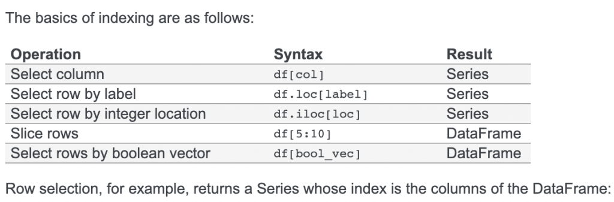

Python数据操作
1. 时间
1.1 日期转化
import time, datetime
import pandas as pd
# 今天
today = datetime.datetime.today().date()
# 时间格式化
date_point_formatted = date_point.strftime('%Y%m%d')
# 字符串转化日期
date = '20190101'
date = datetime.datetime.strptime(str(date), '%Y%m%d').date()
# 各种结构转化为日期：integer, float, string, datetime, list, tuple, 1-d array, Series
date = pd.to_datetime(str(date), format='%Y%m%d')1.2 日期加减、比较
import datetime
today = datetime.datetime.today().date()
# 五年前
delta_year = 5
start_date = datetime.date(today.year - delta_year, today.month, today.day)
# 七天前
day_delta = datetime.timedelta(days=-7)
# 大小比较
today > start_date2. 基本操作
2.1字符串
# 转为字符串
price = 12
price = str(12)
# 转为int
price = int(price)
# 分割
text = "600690.SH"
tmp = text.split(".")
print(tmp[1]+tmp[0])
# 大小写
text = text.lower()
text = text.upper()2.2 列表
1. 遍历 元素
for item in list:
2. 遍历 索引, 元素
for index, item in enumerate(list):2.3 HTTP请求设置代理
r = requests.post(url, params=para, headers=header, proxies={
'http': 'http://127.0.0.1:1086',
'https': 'https://127.0.0.1:1086'
})3. DataFrame
3.1 设置index
date_index = pd.to_datetime(df['trade_date'], format='%Y%m%d')
df.set_index(date_index, inplace=True)
df = df.sort_index(ascending=True)3.2 去重
# 去重
df = df.drop_duplicates(subset='trade_date', keep='first')3.3 拼接
# 拼接
df = df.append(old_df, ignore_index=True)
# merge on
df = pd.merge(income_df, balancesheet_df, on='end_date')
# merge
merged_df = pd.merge(stock_price_df, finance_df, left_index=True, right_index=True, how='left')3.4 遍历、删除
# 按index值进行遍历，并删除大于起始时间的
for index in df.index:
print(index)
if index.date() > start_date:
df.drop(index=index)
# 按下标进行遍历
for index in range(0, len(pe_df), 1):
line = pe_df.iloc[index]
# 直接遍历line
for index, line in df.iterrows():3.5 获取column中最大、最小值
max_line = data.loc[data['profitRate'].idxmax()]
min_line = data.loc[data['profitRate'].idxmin()]3.6 cell操作
# 字符串化
df['trade_date'] = df['trade_date'].apply(str)
# 日志操作
df['end_date'] = df['end_date'].apply(lambda x: x[2:6])
# 单元格操作
df['trade_date'] = df['trade_date'].apply(lambda x: ajust_date_to_quarter(x))
# 读取[row, column]的内容
df.at[row, column]3.7 loc/iloc区别
# 下标方式获取df段
data = pe_df[index: index + 480]
# loc根据index获取，index_value: 真实值，比如20190101、20190102
line = pe_df.loc[index_value]
# iloc根据下标获取，index: 0、1、2、3
line = pe_df.iloc[index]
https://pandas.pydata.org/pandas-docs/stable/getting_started/dsintro.html#indexing-selection
{kind=link}
3.8 保存、加载
# 写文件
df.to_csv(file_path, index=False)
# 读文件
df = pd.read_csv(dir_path+index_code)
# 第一列作为index
df = pd.read_csv(file_path, index_col=0)3.9 日期操作
from pandas.tseries.offsets import *
today = '20190101'
today = pd.Timestamp(today)
# 本季度末
this_quarter = (today - QuarterEnd(n=0))
print(this_quarter.strftime("%Y%m%d"))
# 上一个季度末
last_quarter = (today - QuarterEnd(n=1))
print(last_quarter.strftime("%Y%m%d"))3.9 其它
df = df[['total_revenue', 'total_profit', 'n_income']]
df = df.fillna(value=0)
df = df.round(2)
# 重命名
df = df.rename(columns={'n_income': '净利润', 'total_profit': '总利润'})
# 插入
finance_df.insert(0, '类目', finance_df.index)
# 所有column名称
finance_df.columns.values.tolist()
# group
df_max = df.groupby('trade_date').max().rename(columns={'close': 'max'})
# 转置
finance_df = finance_df.transpose()
# 是否存在某个row
result = row_name in analysed_stocks.index4. 异常
4.1 异常栈
import traceback
try:
except Exception as e:
traceback.print_exc()